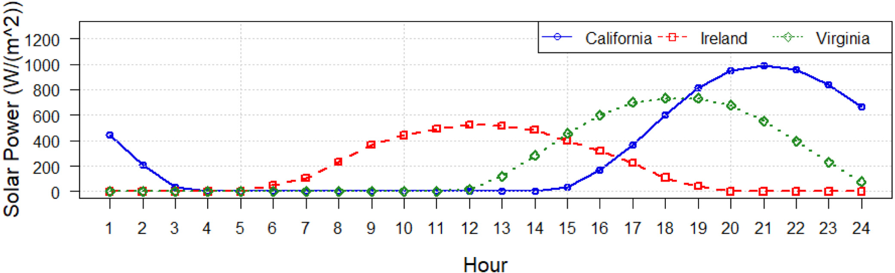

VoltK8sScheduler
Un ordonnanceur Kubernetes pour environnements contraints en énergie

Hausse des centres de données. Consommation et impact environnemental croissants.
IA propulse la demande. Calcul = 40% conso. Challenge : Réduire coûts & empreinte carbone.
Objectif neutralité carbone : Solaire/éolien dominants (90%), mais intermittents.
Solaire variable. Heures creuses/pleines influencent les coûts. Prix parfois négatifs.
1: Limitation dynamique puissance. 2: Conteneurs + Ordonnancement K8s éco-conscient.
Ordonnanceur K8s: prend des decisions en se bassant sur les ressources CPU/RAM. Ignore l'énergie, nécessaire en environnement contraint.
Nous proposons VoltK8sScheduler: intègre l'énergie dans le placement.
Techniques pour limiter la consommation max des serveurs.
Objectifs: efficacité, éviter urgences, réduire coûts OPEX.
Mécanismes: DVFS, RAPL (Intel), Intel Node Manager, Power Gating, Thread Packing...
Beaucoup ne sont pas adaptés à notre cas :
Plusieurs travaux visent à optimiser l'énergie dans K8s.
Exemples : Kaur et al. (interférences), Vishal et al. (edge), Philipp et al. (prédiction via GNN), Tayebeh et al. (Caspian, carbone), John & Javad (RLKube).
Ces solutions sont intéressantes, mais...
Souvent, l'énergie n'est pas le critère principal de décision.
Focus sur optimisation ressources ou allocation, pas directement sur contrainte énergétique forte.
Notre besoin: Placer charges en fonction de l'énergie disponible et limitée.
Vue d'ensemble de notre solution VoltK8sScheduler.
(Figure 2: VoltK8sScheduler architecture - Interaction des composants)
(Default Scheduler, VoltK8sScheduler, API Server, Metrics, Powercap...)
Limite puissance nœuds (RAPL).
Collecte conso. énergie.
Plugin K8s, décisions.
RAPL: Running Average Power Limit (Intel).
Mesure et limite la conso. de domaines du processeur.
(Figure 3: Domaines de puissance RAPL)
(PKG, PPO, PP1, DRAM, PSys)
PL1 (Long-Term): Régule conso. moyenne (TDP).
PL2 (Short-Term): Permet pics de conso. brefs.
Peak Power: Limite absolue instantanée.
Algorithm 1: Power Capping
Input: current_domain, Pmin, sleep_time, get_source_power
1 Function Init(domains):
2 Pmax_ref = 0;
3 foreach domain_path in domains do
4 Pmax_ref = max(Pmax_ref, readMaxPower(domain_path));
5 return Pmax_ref; // Pmax de l'article (TDP)
Initialisation: trouve Pmax de référence (TDP).
7 while True do
8 Ps = get_source_power(); // Puissance source
9 Power_to_apply = Pmin;
10 if Ps > Pmax_ref then
11 Power_to_apply = Pmax_ref;
12 else if Ps > Pmin then
13 Power_to_apply = Ps;
14 foreach domain_path in current_domain do
15 current_domain[domain_path] = Power_to_apply;
16 sleep(sleep_time);
Boucle: ajuste limite conso. nœud selon Ps et Pmin/Pmax.
Rappel: Architecture K8s (Maître-Esclave).
(Figure 4: Architecture Kubernetes)
Expose points d'extension (phases) pour plugins.
(Figure 5: Framework de Scheduling)
Nous utilisons: PreFilter, Filter, Score, NormalizeScore, Reserve.
Notre ordonnanceur se basse uniquement sur l'énergie pour prendre une décision.
Objectif : placer pods sur nœuds avec assez d'énergie disponible.
Prépare les infos. Calcule podPower (utilisateur ou historique).
Collecte Pmax (capping) et Pac (conso actuelle nœud).
Sortie: powerLimits [nodeName -> (Pmax, Pac, podPower)]Élimine nœuds non viables.
Nœud viable si : (Pmax - Pac - allocatedPower) >= podPower
Attribue un score aux nœuds filtrés.
Score = Pmax - Pac - podPower - allocatedPowerNormalizeScore: Normalise scores (0-MaxNodeScore).
Reserve: Réserve temporairement podPower. Compense le délai de scrapping des métriques.
File:
alloc: {"A":0, "B":0}. MaxScore: 100.
P1: user 20W. podPower = 20W.
A et B viables pour P1 (20W).
A: 50. B: 60.
B (100) > A (~83). P1 ‚Üí B.
File:
B réserve 20W. alloc: {"A":0, "B":20}.
P2: hist. 30W. podPower = 30W.
A et B viables pour P2 (30W).
A: 40. B: 30.
A (100) > B (75). P2 ‚Üí A.
A réserve 30W. alloc: {"A":30, "B":20}.
Tests sur Grid5000 (Taurus, Econome, etc.).
Cluster local: 3 mini-PCs (Intel i7, 15W, RAPL v2).
Comportement capping selon version RAPL.
(Figures 6 & 7: RAPL v1)
(Figures 8 & 9: RAPL v2)
RAPL v1: Chute rapide conso. v2: Baisse linéaire.
Scénario : Node1 Pmax = 90% de Node2 Pmax.
(Figure 10: Web App, Guestbook)
(Figure 11: Web App, Nœuds différenciés)
Plus de pods sur Node2 pour compenser l'écart entre les deux nœuds.
Moins de pods sur Node2 suffisent.
Power capping efficace pour respecter limites.
VoltK8sScheduler favorise nœuds avec énergie résiduelle.
Décisions cohérentes avec algorithmes.
VoltK8sScheduler: ordonnanceur K8s tenant compte énergie.
Agent power capping + scheduler avec Prometheus/Kepler.
Combinaison respecte budget énergie et déploie apps.
Merci pour votre attention !
Email: itsme@menraromial.com
Site web: https://menraromial.com